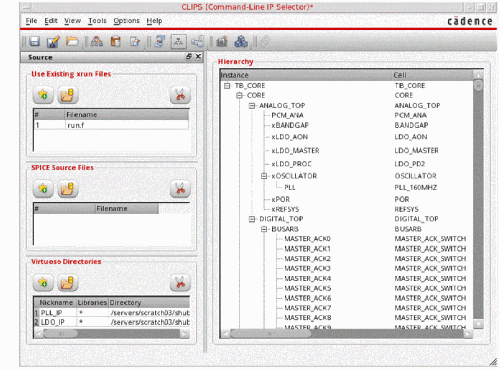

Modes for Launching CLIPS
A CLIPS session can be launched in the following modes:
-
GUI mode: You can use the command
clips&to launch CLIPS in GUI mode.
The CLIPS window is displayed.
 -
Command-line mode: You can use the command
clips<optional command-line arguments>to launch CLIPS in command-line mode.
A few examples are given below.clips -load myTextPll.clips
clips -dirs ../PLL_IP -xrun xrunArgs &
clips -load myTextPll.clips -batch -log myBatchRun.log
clips -dirs ../PLL_IP -xrun xrunArgs -switch "inst=testbench.IP0.I11.I14 config=PLL_IP::amsPLL/dffnr_2x_hv/config ade=PLL_IP::amsPLL/pll_top/maestro:pll_top:1" -switch "inst=testbench.IP0.I11.I13 config=PLL_IP::amsPLL/nor2_2x_nv/config ade=PLL_IP::amsPLL/pll_top/ams_state" -batch
clips -export "config=amsPLL/dffnr_2x_hv/config ade=PLL_IP::amsPLL/pll_top/ams_state outdir=clips_export_dffnr cdsdir=../test/IP_dir" -batch
The command-line arguments can be saved in a text file and used while launching CLIPS with the help of the following command:clips -f <command-line arguments file>
Related Topics:
Return to top